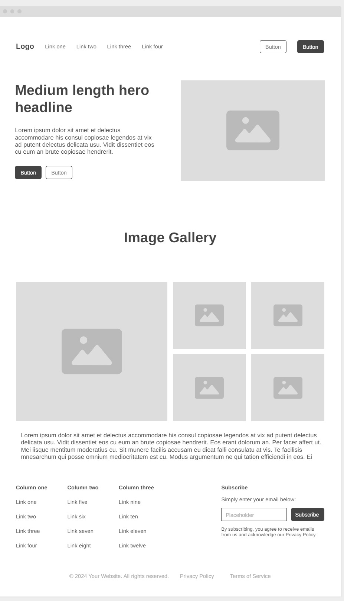
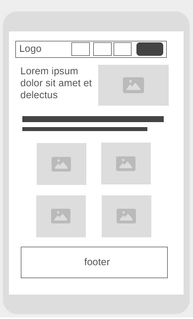

Site Name: San Antonio's Chamber
The site represents San Antonio's population, commerce and its purpose.
Site Purpose
The purpose of the site is:
- promote and connect the local commercial sector.
Scenarios
- What events is the chamber organizing this month to foster business networking?
- Where can I find contact information for the chamber's board of directors?
- What has been the population growth in the area?
Color schema
The color scheme includes:
- --color1 : #43114f;
- --color2 : #b41b6b;
- --color3 : #088aff;
- --color4 : #efdcf6;
- --color5 : #fffbf4;
Typography
The selected typography is:
- font-family: "Poppins", sans-serif
Wireframe
Basic layout for the homepage in:
- Desktop view
 - Mobile view
